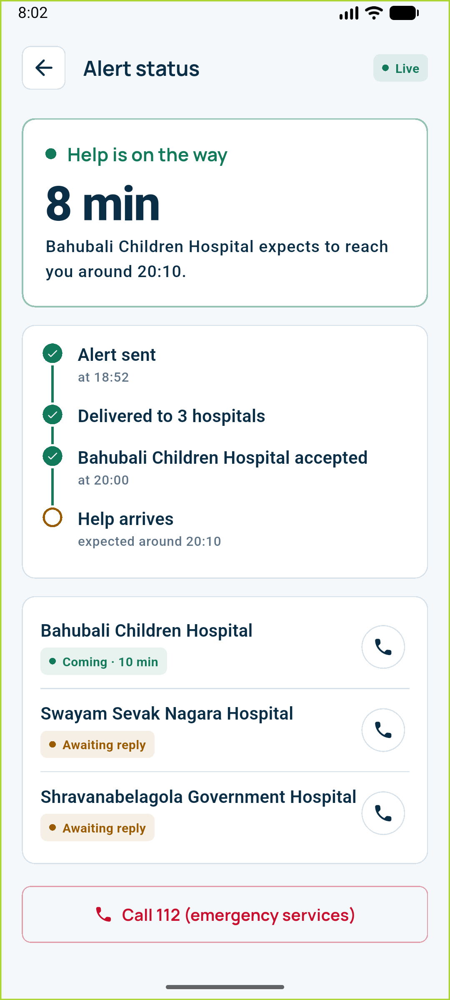

<!doctype html>
<html lang="en">
<head>
<meta charset="utf-8">
<title>Élan — film</title>
<!--
  Élan promo film. A deterministic composition: FILM.render(t) draws the exact
  frame for time t (seconds), so record.mjs can capture it frame by frame.
  Style follows a documentary-explainer reference: paper/charcoal surfaces,
  typed monospace narration with a blue cursor, huge condensed serif words,
  hairline diagrams and one blue accent.
-->
<style>
  @font-face { font-family: "Bodoni Cond"; src: url("file:///C:/Windows/Fonts/BOD_CR.TTF"); }
  @font-face { font-family: "Mono"; src: url("file:///C:/Windows/Fonts/CascadiaMono.ttf"); font-weight: 200 700; }
  @font-face { font-family: "Manrope"; src: url("../assets/fonts/Manrope.ttf"); font-weight: 200 800; }
  :root {
    --paper: #E7E3DC; --ink: #191919; --dark: #15181C; --dink: #ECE8E1;
    --blue: #2F6BFF; --red: #D3263A; --green: #127A5A; --navy: #0B2E47;
  }
  * { box-sizing: border-box; margin: 0; padding: 0; }
  html, body { width: 1080px; height: 1920px; overflow: hidden; background: #000; }
  #stage { position: relative; width: 1080px; height: 1920px; overflow: hidden; font-family: "Mono", monospace; background: var(--paper); }
  .layer { position: absolute; inset: 0; }
  .paper { background: var(--paper); color: var(--ink); }
  .dark { background: var(--dark); color: var(--dink); }
  .grain { position: absolute; inset: 0; pointer-events: none; mix-blend-mode: multiply; opacity: .5; }
  .dark .grain { mix-blend-mode: screen; opacity: .18; }
  .vignette { position: absolute; inset: 0; pointer-events: none;
    background: radial-gradient(ellipse at 50% 45%, rgba(0,0,0,0) 55%, rgba(0,0,0,.10) 100%); }
  .dark .vignette { background: radial-gradient(ellipse at 50% 45%, rgba(0,0,0,0) 45%, rgba(0,0,0,.55) 100%); }
  .grid { position: absolute; inset: 0; pointer-events: none;
    background-image: linear-gradient(to right, currentColor 1px, transparent 1px), linear-gradient(to bottom, currentColor 1px, transparent 1px);
    background-size: 180px 180px; background-position: 90px 60px; opacity: .055; }
  .visual { position: absolute; inset: 0; transform-origin: 50% 62%; }

  /* top bar */
  .topbar { position: absolute; left: 64px; right: 64px; top: 64px; display: flex; justify-content: space-between;
    font-size: 19px; letter-spacing: .2em; text-transform: uppercase; opacity: .62; font-weight: 350; }

  /* captions */
  .captions { position: absolute; left: 70px; right: 70px; top: 196px; }
  .card { position: absolute; left: 0; right: 0; top: 0; }
  .typed { font-size: 29px; line-height: 1.42; letter-spacing: .14em; text-transform: uppercase; font-weight: 380; max-width: 900px; }
  .cursor { display: inline-block; width: 15px; height: 30px; background: var(--blue); vertical-align: -5px; margin-left: 6px; }
  .big { font-family: "Bodoni Cond", serif; font-size: 214px; line-height: .98; letter-spacing: -.005em; margin: 14px 0 8px -6px; }
  .big .w { display: inline-block; white-space: nowrap; margin-right: .2em; }
  .big .l { display: inline-block; will-change: transform, opacity, filter; }
  .post { font-size: 27px; line-height: 1.5; letter-spacing: .14em; text-transform: uppercase; font-weight: 380; opacity: .78; }

  .mono-s { font-family: "Mono"; font-size: 19px; letter-spacing: .16em; text-transform: uppercase; font-weight: 380; }
  .fig { position: absolute; left: 70px; bottom: 74px; opacity: .6; }
  .abs { position: absolute; }
  .ui { font-family: "Manrope", sans-serif; }
</style>
</head>
<body>
<div id="stage"></div>
<svg width="0" height="0" style="position:absolute">
  <filter id="noise"><feTurbulence type="fractalNoise" baseFrequency=".9" numOctaves="2" seed="7"/><feColorMatrix type="saturate" values="0"/></filter>
</svg>
<script>
// ------------------------------------------------------------------ helpers
const clamp = (x, a = 0, b = 1) => Math.min(b, Math.max(a, x));
const E = {
  out: t => 1 - Math.pow(1 - t, 3),
  inOut: t => t < .5 ? 4 * t * t * t : 1 - Math.pow(-2 * t + 2, 3) / 2,
  lin: t => t,
  back: t => { const c = 1.6; return 1 + (c + 1) * Math.pow(t - 1, 3) + c * Math.pow(t - 1, 2); },
};
const seg = (lt, a, b, e = E.out) => e(clamp((lt - a) / (b - a)));
const lerp = (a, b, p) => a + (b - a) * p;
function rng(seed) { return () => { seed |= 0; seed = seed + 0x6D2B79F5 | 0; let t = Math.imul(seed ^ seed >>> 15, 1 | seed); t = t + Math.imul(t ^ t >>> 7, 61 | t) ^ t; return ((t ^ t >>> 14) >>> 0) / 4294967296; }; }
const h = (html) => { const d = document.createElement('div'); d.innerHTML = html.trim(); return d.firstElementChild; };
const pad = (n, w = 2) => String(Math.floor(n)).padStart(w, '0');
const mmss = s => `${Math.floor(s / 60)}:${pad(s % 60)}`;
const CPS = 25;           // typing speed, characters per second
const STAGGER = .045;     // big-word letter stagger
const LETTER = .5;        // big-word letter animation length

// ------------------------------------------------------------------ the street map (seeded, identical every time)
const MAP_DOT = { x: 540, y: 640 };   // in map coordinates; the map layer sits at top 540
function mapSVG(stroke = '#191919') {
  const r = rng(42), cols = 9, rows = 12, P = [];
  for (let i = 0; i < cols; i++) { P[i] = []; for (let j = 0; j < rows; j++) P[i][j] = [i * 150 - 60 + (r() - .5) * 70, j * 130 - 40 + (r() - .5) * 60]; }
  let minor = '';
  for (let i = 0; i < cols; i++) for (let j = 0; j < rows; j++) {
    if (i < cols - 1 && r() < .86) minor += `M${P[i][j]}L${P[i + 1][j]}`;
    if (j < rows - 1 && r() < .82) minor += `M${P[i][j]}L${P[i][j + 1]}`;
  }
  const majors = [
    'M-40,700 C 260,610 420,690 540,640 S 860,560 1120,600',
    'M470,-40 C 520,260 560,420 540,640 S 520,1100 610,1500',
    'M-40,1060 C 200,960 330,900 440,760 S 520,660 540,640',
  ];
  const road = d => `<path d="${d}" fill="none" stroke="${stroke}" stroke-opacity=".55" stroke-width="30"/><path d="${d}" fill="none" stroke="var(--paper)" stroke-width="24"/>`;
  return `<svg class="abs" style="left:0;top:540px" width="1080" height="1400" viewBox="0 0 1080 1400">
    <defs><linearGradient id="fadeTop" x1="0" y1="0" x2="0" y2="1"><stop offset="0" stop-color="var(--paper)" stop-opacity="1"/><stop offset=".22" stop-color="var(--paper)" stop-opacity="0"/></linearGradient></defs>
    <path d="M-60,1250 C 200,1150 420,1330 700,1230 S 1000,1120 1140,1160" fill="none" stroke="${stroke}" stroke-opacity=".07" stroke-width="130"/>
    <path d="${minor}" fill="none" stroke="${stroke}" stroke-opacity=".38" stroke-width="2.2" stroke-linecap="round"/>
    ${majors.map(road).join('')}
    <g font-family="Mono" font-size="17" letter-spacing="3" fill="${stroke}" fill-opacity=".55">
      <text transform="translate(705,600) rotate(-9)">OLD MARKET RD</text>
      <text transform="translate(575,330) rotate(80)">TEMPLE ST</text>
      <text transform="translate(120,935) rotate(-24)">HILL VIEW RD</text>
      <text x="120" y="1268">RIVERSIDE</text>
    </g>
    <rect width="1080" height="1400" fill="url(#fadeTop)"/>
  </svg>`;
}
function dotSVG() {
  return `<svg class="abs dot" style="left:0;top:540px;overflow:visible" width="1080" height="1400">
    <circle class="halo" cx="${MAP_DOT.x}" cy="${MAP_DOT.y}" r="40" fill="var(--blue)" fill-opacity=".12"/>
    <circle class="ring" cx="${MAP_DOT.x}" cy="${MAP_DOT.y}" r="40" fill="none" stroke="var(--blue)" stroke-width="2"/>
    <circle class="core" cx="${MAP_DOT.x}" cy="${MAP_DOT.y}" r="15" fill="var(--blue)" stroke="#fff" stroke-width="5"/>
  </svg>`;
}
function updateDot(el, lt, beat = false) {
  const p = (lt % 2) / 2;
  el.querySelector('.ring').setAttribute('r', 30 + 70 * E.out(p));
  el.querySelector('.ring').setAttribute('stroke-opacity', 1 - p);
  let s = 1;
  if (beat) { const b = lt % 1.1; s = 1 + .35 * Math.exp(-Math.pow((b - .05) / .06, 2)) + .2 * Math.exp(-Math.pow((b - .3) / .06, 2)); }
  el.querySelector('.core').setAttribute('r', 15 * s);
  el.querySelector('.halo').setAttribute('r', 40 * (1 + (s - 1) * 1.6));
}

// ------------------------------------------------------------------ scenes
// Each scene: dur, surface, chapter, captions [{at, pre, big, color, size, post}], sfx [[t, type, opts]],
// build(v) -> state (v is the .visual layer), update(state, lt).
const SCENES = [
  { // 1
    dur: 7, surface: 'paper', chapter: '01 — The golden minutes',
    captions: [{ at: .5, pre: 'Every time a heart loses its rhythm,', big: 'minutes' },
               { at: 4.1, pre: 'begin to matter more than', big: 'anything.' }],
    sfx: [[0, 'heart', { n: 7 }]],
    build(v) { v.innerHTML = mapSVG() + dotSVG() + `<div class="abs mono-s" style="left:70px;top:1700px;opacity:.6">12.8530° N · 76.4840° E</div><div class="fig mono-s">Fig. 01 — One person. One location.</div>`; return { dot: v.querySelector('.dot') }; },
    update(s, lt) { updateDot(s.dot, lt); },
  },
  { // 2
    dur: 7.5, surface: 'dark', chapter: '01 — The golden minutes',
    captions: [{ at: .3, pre: 'Most people lose them calling hospitals', big: 'one by one.', color: 'var(--red)' }],
    sfx: [0, 1, 2, 3, 4].map(i => [2.7 + i * .78, 'strike']),
    build(v) {
      const rows = [['District Hospital', '+91 81726 00000'], ['City Heart Centre', '+91 81726 00004'], ['Govt. Hospital', '+91 81726 00001'],
                    ['Sevak Nursing Home', '+91 81726 00007'], ['PHC Chalya', '+91 81726 00002']];
      v.innerHTML = rows.map((r, i) => `<div class="abs row" style="left:70px;right:70px;top:${960 + i * 140}px;height:100px;border-bottom:1px solid rgba(236,232,225,.14)">
          <div class="abs" style="left:0;top:24px;font-size:30px;letter-spacing:.1em;text-transform:uppercase">${r[0]}</div>
          <div class="abs" style="left:0;top:66px;font-size:20px;letter-spacing:.14em;opacity:.55">${r[1]}</div>
          <div class="abs st" style="right:0;top:34px;font-size:20px;letter-spacing:.18em"></div>
          <div class="abs strike" style="left:-8px;top:46px;height:3px;background:var(--red)"></div></div>`).join('') +
        `<div class="fig mono-s">Fig. 02 — Five calls. No answer.</div>`;
      return { rows: [...v.querySelectorAll('.row')] };
    },
    update(s, lt) {
      s.rows.forEach((r, i) => {
        const t0 = 2.7 + i * .78, appear = seg(lt, .8 + i * .12, 1.3 + i * .12);
        r.style.opacity = appear; r.style.transform = `translateY(${(1 - appear) * 30}px)`;
        const st = r.querySelector('.st');
        if (lt < t0 - .55) { st.textContent = ''; }
        else if (lt < t0) { st.textContent = Math.floor(lt * 4) % 2 ? 'Calling…' : 'Calling'; st.style.color = 'var(--dink)'; st.style.opacity = .6; }
        else { st.textContent = 'No answer'; st.style.color = 'var(--red)'; st.style.opacity = 1; }
        r.querySelector('.strike').style.width = `${seg(lt, t0, t0 + .35) * 660}px`;
      });
    },
  },
  { // 3
    dur: 5.8, surface: 'paper', chapter: '02 — One press',
    captions: [{ at: .4, pre: 'Élan — French for', big: 'momentum.', post: 'It turns those minutes into action.' }],
    sfx: [[0, 'heart', { n: 5 }]],
    build(v) {
      v.innerHTML = `<svg class="abs" style="left:0;top:0" width="1080" height="1920">${[0, 1, 2, 3, 4, 5].map(i => `<circle class="rg" cx="540" cy="1420" r="10" fill="none" stroke="#191919" stroke-width="1.5"/>`).join('')}
        <line x1="70" y1="1420" x2="1010" y2="1420" stroke="#191919" stroke-opacity=".25" stroke-dasharray="4 10"/>
        <circle class="mv" cx="70" cy="1420" r="12" fill="var(--blue)"/></svg>
        <div class="fig mono-s">Fig. 03 — Élan /eɪ.lɑ̃/ : spirit, momentum, drive.</div>`;
      return { rings: [...v.querySelectorAll('.rg')], mv: v.querySelector('.mv') };
    },
    update(s, lt) {
      s.rings.forEach((c, i) => { const p = ((lt + i * .55) % 3.3) / 3.3; c.setAttribute('r', 20 + 480 * p); c.setAttribute('stroke-opacity', .35 * (1 - p)); });
      s.mv.setAttribute('cx', 70 + 940 * E.inOut(clamp((lt - .8) / 4.6)));
    },
  },
  { // 4
    dur: 6.2, surface: 'dark', chapter: '02 — One press',
    captions: [{ at: .3, pre: 'Hold one button for', big: '1.5 seconds.' }],
    sfx: [[2.4, 'rise', { d: 1.5 }], [3.9, 'ping']],
    build(v) {
      v.innerHTML = `<div class="abs mono-s cnt" style="left:110px;top:1112px;color:var(--dink);opacity:.75"></div>
        <div class="abs btn ui" style="left:110px;top:1160px;width:860px;height:230px;border-radius:34px;background:#C8102E;overflow:hidden;box-shadow:0 30px 80px rgba(200,16,46,.25)">
          <div class="abs fill" style="left:0;top:0;bottom:0;background:rgba(255,255,255,.15)"></div>
          <div class="abs" style="left:0;right:0;top:52px;text-align:center;color:#fff;font-weight:800;font-size:58px;letter-spacing:-.01em"><span style="font-size:42px;letter-spacing:.06em;margin-right:22px">SOS</span>Hold to send alert</div>
          <div class="abs" style="left:0;right:0;top:136px;text-align:center;color:rgba(255,255,255,.85);font-weight:600;font-size:30px">Free · alerts the nearest hospitals</div>
        </div>
        <div class="abs fing" style="left:480px;top:1215px;width:120px;height:120px;border-radius:50%;border:3px solid rgba(255,255,255,.85);background:rgba(255,255,255,.12)"></div>
        <svg class="abs" style="left:0;top:0;overflow:visible" width="1080" height="1920"><circle class="rip" cx="540" cy="1275" r="0" fill="none" stroke="#fff" stroke-width="3"/></svg>
        <div class="abs mono-s sent" style="left:110px;top:1430px;color:var(--blue);font-size:22px"></div>
        <div class="fig mono-s">Fig. 04 — The hold-to-send button.</div>`;
      return { q: s => v.querySelector(s) };
    },
    update(s, lt) {
      const hold = clamp((lt - 2.4) / 1.5);
      s.q('.fill').style.width = `${hold * 100}%`;
      s.q('.cnt').textContent = lt < 2.2 ? 'Press and hold' : `Holding · ${(hold * 1.5).toFixed(1)} s / 1.5 s`;
      const f = seg(lt, 2.0, 2.4); s.q('.fing').style.opacity = lt > 4.1 ? 1 - seg(lt, 4.1, 4.5) : f;
      s.q('.fing').style.transform = `scale(${1.25 - .25 * f - (hold > 0 && hold < 1 ? .05 : 0)})`;
      const rp = seg(lt, 3.9, 4.9); s.q('.rip').setAttribute('r', 60 + 500 * rp); s.q('.rip').setAttribute('stroke-opacity', lt > 3.9 ? 1 - rp : 0);
      s.q('.btn').style.filter = lt > 3.9 ? `brightness(${1 + .15 * (1 - seg(lt, 3.9, 4.4))})` : 'none';
      s.q('.sent').textContent = lt > 3.95 ? '✓ Alert sent' : '';
    },
  },
  { // 5
    dur: 5.6, surface: 'paper', chapter: '02 — One press',
    captions: [{ at: .3, pre: 'Holding, not tapping — so a pocket can never send one by', big: 'accident.' }],
    sfx: [[3.0, 'tick2'], [4.4, 'ping']],
    build(v) {
      const row = (y, label) => `<div class="abs mono-s" style="left:70px;top:${y}px;font-size:22px">${label}</div>
        <div class="abs" style="left:250px;right:250px;top:${y + 12}px;height:2px;background:rgba(25,25,25,.18)"></div>
        <div class="abs bar" style="left:250px;top:${y + 2}px;height:22px;background:#191919"></div>
        <div class="abs mono-s res" style="right:70px;top:${y}px;font-size:22px;text-align:right;width:170px"></div>`;
      v.innerHTML = row(1180, 'Tap') + row(1360, 'Hold') +
        `<div class="abs mono-s" style="left:250px;top:1470px;opacity:.5">0 s</div><div class="abs mono-s" style="left:${250 + 580 * .75 - 40}px;top:1470px;opacity:.5">1.5 s</div><div class="abs mono-s" style="right:250px;top:1470px;opacity:.5">2 s</div>
        <div class="abs" style="left:${250 + 580 * .75}px;top:1150px;width:1px;height:310px;background:var(--blue);opacity:.6"></div>
        <div class="fig mono-s">Fig. 05 — Anything shorter than 1.5 s is ignored.</div>`;
      return { bars: [...v.querySelectorAll('.bar')], res: [...v.querySelectorAll('.res')] };
    },
    update(s, lt) {
      s.bars[0].style.width = `${seg(lt, 2.8, 3.0) * 580 * .05}px`;
      s.res[0].textContent = lt > 3.0 ? 'Ignored' : ''; s.res[0].style.opacity = .55;
      s.bars[1].style.width = `${seg(lt, 3.3, 4.4, E.lin) * 580 * .75}px`; s.bars[1].style.background = 'var(--blue)';
      s.res[1].textContent = lt > 4.4 ? 'Sent' : ''; s.res[1].style.color = 'var(--blue)';
    },
  },
  { // 6
    dur: 9.2, surface: 'paper', chapter: '03 — The signal',
    captions: [{ at: .3, pre: 'Your exact location, your symptoms, a short message —' },
               { at: 3.7, pre: 'reach the', big: 'three nearest hospitals', size: 176 }],
    sfx: [[1.4, 'blip'], [1.75, 'blip'], [2.1, 'blip']],
    build(v) {
      const H = [{ x: 380, y: 520, n: 'Bahubali Children Hospital', d: '160 m', lx: 70, ly: 470 },
                 { x: 830, y: 470, n: 'Swayam Sevak Nagara Hosp.', d: '730 m', lx: 600, ly: 400 },
                 { x: 300, y: 930, n: 'Shravanabelagola Govt. Hosp.', d: '750 m', lx: 70, ly: 990 }];
      v.innerHTML = mapSVG() + `<svg class="abs" style="left:0;top:540px;overflow:visible" width="1080" height="1400">
        ${H.map(p => `<line class="ln" x1="${MAP_DOT.x}" y1="${MAP_DOT.y}" x2="${p.x}" y2="${p.y}" stroke="var(--blue)" stroke-width="3" stroke-dasharray="10 9"/>
          <g class="hs" transform="translate(${p.x},${p.y})"><rect x="-26" y="-26" width="52" height="52" rx="8" fill="#191919"/><path d="M-5,-15h10v10h10v10h-10v10h-10v-10h-10v-10h10z" fill="#E7E3DC"/></g>
          <g class="lb" font-family="Mono" letter-spacing="3"><text x="${p.lx}" y="${p.ly}" font-size="19" fill="#191919">${p.n.toUpperCase()}</text><text x="${p.lx}" y="${p.ly + 30}" font-size="19" fill="var(--blue)">${p.d}</text></g>`).join('')}
        </svg>` + dotSVG() + `<div class="fig mono-s">Fig. 06 — One patient. Three hospitals.</div>`;
      return { dot: v.querySelector('.dot'), ln: [...v.querySelectorAll('.ln')], hs: [...v.querySelectorAll('.hs')], lb: [...v.querySelectorAll('.lb')], H };
    },
    update(s, lt) {
      updateDot(s.dot, lt);
      s.ln.forEach((l, i) => {
        const p = seg(lt, 1.4 + i * .35, 2.3 + i * .35, E.inOut), H = s.H[i];
        l.setAttribute('x2', lerp(MAP_DOT.x, H.x, p)); l.setAttribute('y2', lerp(MAP_DOT.y, H.y, p));
        l.setAttribute('stroke-dashoffset', -lt * 30); l.style.opacity = p > 0 ? 1 : 0;
        const a = seg(lt, 2.1 + i * .35, 2.5 + i * .35, E.back);
        s.hs[i].setAttribute('transform', `translate(${H.x},${H.y}) scale(${a})`);
        s.lb[i].style.opacity = seg(lt, 2.3 + i * .35, 2.8 + i * .35);
      });
    },
  },
  { // 7
    dur: 6.4, surface: 'dark', chapter: '03 — The signal',
    captions: [{ at: .3, pre: 'All at', big: 'the same time.' }],
    sfx: [[4.7, 'stamp']],
    build(v) {
      v.innerHTML = `<div class="abs tg" style="left:150px;top:860px;width:780px;height:820px;background:#F3F0EA;color:#191919;padding:56px 70px;
          -webkit-mask: radial-gradient(circle at 0 18px, transparent 8px, #000 9px) 0 0/50.1% 36px repeat-y, radial-gradient(circle at 100% 18px, transparent 8px, #000 9px) 100% 0/50.1% 36px repeat-y;
          box-shadow:0 40px 90px rgba(0,0,0,.45)">
          <div style="font-size:22px;letter-spacing:.2em;border-bottom:2px solid #191919;padding-bottom:16px;display:flex;justify-content:space-between"><span>ÉLAN ALERT</span><span>#A-1DFF16</span></div>
          <pre class="tx" style="font-family:Mono;font-size:25px;line-height:1.95;letter-spacing:.06em;margin-top:26px;white-space:pre"></pre>
        </div>
        <div class="abs st" style="left:560px;top:1460px;padding:12px 30px;border:7px solid var(--blue);color:var(--blue);font-family:Mono;font-weight:700;font-size:78px;letter-spacing:.12em;border-radius:8px">SENT</div>
        <div class="fig mono-s">Fig. 07 — What every hospital receives.</div>`;
      return { tx: v.querySelector('.tx'), st: v.querySelector('.st'), tg: v.querySelector('.tg') };
    },
    TEXT: 'PATIENT ..... PRIYA SHARMA\nSYMPTOM ..... CHEST PAIN\nLATITUDE .... 12.8530° N\nLONGITUDE ... 76.4840° E\nSENT TO ..... 3 HOSPITALS\nRADIUS ...... 15 KM\nTIME ........ 18:52:07.341',
    update(s, lt) {
      const t = this.TEXT; s.tx.textContent = t.slice(0, Math.floor(clamp((lt - 1.1) * 52, 0, t.length)));
      const a = seg(lt, 4.7, 4.88, E.lin); s.st.style.opacity = a; s.st.style.transform = `rotate(-9deg) scale(${1.7 - .7 * a})`;
      s.tg.style.transform = `translateY(${(1 - seg(lt, .2, 1.0)) * 120}px) translateX(${lt > 4.7 && lt < 4.9 ? Math.sin(lt * 120) * 3 : 0}px)`;
      s.tg.style.opacity = seg(lt, .2, .8);
    },
  },
  { // 8
    dur: 6.6, surface: 'dark', chapter: '04 — The duty desk',
    captions: [{ at: .3, pre: "On the other side, the hospital's duty desk sees it", big: 'instantly.' }],
    sfx: [[.6, 'whoosh'], [1.0, 'alert']],
    build(v) { return deskBuild(v); },
    update(s, lt) { deskUpdate(s, { slide: seg(lt, .5, 1.3), wait: 38 + lt, red: false, accepted: 0, tap: -1 }); },
  },
  { // 9
    dur: 6.4, surface: 'dark', chapter: '04 — The duty desk',
    captions: [{ at: .3, pre: 'Unanswered alerts rise to the top. After two minutes, the clock turns', big: 'red.', color: 'var(--red)' }],
    sfx: [[3.45, 'alarm']],
    build(v) { const s = deskBuild(v); s.ff = h(`<div class="abs mono-s" style="right:90px;top:905px;color:var(--dink);opacity:.6"></div>`); v.appendChild(s.ff); return s; },
    update(s, lt) {
      const ff = lt < 3.45 ? lerp(104, 120, seg(lt, .4, 3.45, E.inOut)) : 120 + (lt - 3.45);
      s.ff.textContent = lt > .3 && lt < 3.45 ? '▶▶ Fast-forward' : (lt >= 3.45 ? 'Urgent · over 2:00' : '');
      s.ff.style.color = lt >= 3.45 ? 'var(--red)' : 'var(--dink)';
      deskUpdate(s, { slide: 1, wait: ff, red: lt >= 3.45, pulse: lt - 3.45, accepted: 0, tap: -1 });
    },
  },
  { // 10
    dur: 6.0, surface: 'dark', chapter: '04 — The duty desk',
    captions: [{ at: .3, pre: 'One tap.', big: 'Accepted.' }],
    sfx: [[1.5, 'chime']],
    build(v) { return deskBuild(v); },
    update(s, lt) { deskUpdate(s, { slide: 1, wait: 124 + lt, red: lt < 1.5, accepted: seg(lt, 1.5, 1.9), tap: lt, toast: seg(lt, 2.0, 2.5) }); },
  },
  { // 11
    dur: 8.4, surface: 'paper', chapter: '05 — Help is on the way',
    captions: [{ at: .3, pre: "Back on the patient's phone, the screen changes by itself.", big: 'Help is on the way.', size: 150 }],
    sfx: [[4.6, 'blip'], [5.1, 'blip'], [5.6, 'blip']],
    build(v) {
      const W = 470, L = 545, T = 830;
      const pt = (dx, dy) => [L + 14 + (dx / 1080 * 1.016 - .008) * W, T + 14 + (dy / 1080 * 1.016 - .066) * W];
      const notes = [{ p: pt(240, 486), label: 'ETA · counts down', y: 1000 }, { p: pt(528, 1098), label: 'Hospital accepted', y: 1290 }, { p: pt(919, 1553), label: 'One tap to call', y: 1540 }];
      v.innerHTML = `<div class="abs ph" style="left:${L}px;top:${T}px;width:${W + 28}px;border:14px solid #191919;border-radius:58px;overflow:hidden;aspect-ratio:1063/2324;background:#fff;box-shadow:0 40px 90px rgba(0,0,0,.2)">
          </div>
        <svg class="abs" style="left:0;top:0;overflow:visible" width="1080" height="1920">${notes.map(n => `<g class="nt"><polyline points="420,${n.y + 8} 470,${n.y + 8} ${n.p[0]},${n.p[1]}" fill="none" stroke="var(--blue)" stroke-width="2"/><circle cx="${n.p[0]}" cy="${n.p[1]}" r="9" fill="none" stroke="var(--blue)" stroke-width="2.5"/></g>`).join('')}</svg>
        ${notes.map(n => `<div class="abs mono-s nl" style="left:70px;top:${n.y - 4}px;width:350px;color:var(--blue);font-size:20px">${n.label}</div>`).join('')}
        <div class="fig mono-s">Fig. 08 — The patient's alert screen (real app).</div>`;
      return { ph: v.querySelector('.ph'), nt: [...v.querySelectorAll('.nt')], nl: [...v.querySelectorAll('.nl')] };
    },
    update(s, lt) {
      const a = seg(lt, .4, 1.4); s.ph.style.opacity = a; s.ph.style.transform = `translateY(${(1 - a) * 140}px)`;
      s.nt.forEach((n, i) => { n.style.opacity = seg(lt, 4.6 + i * .5, 4.9 + i * .5); s.nl[i].style.opacity = seg(lt, 4.6 + i * .5, 4.9 + i * .5); });
    },
  },
  { // 12
    dur: 6.4, surface: 'dark', chapter: '05 — Help is on the way',
    captions: [{ at: .3, pre: 'No refreshing. No waiting on hold. Just', big: 'a countdown.' }],
    sfx: (() => { const e = []; for (let k = 0; k < 8; k++) { const t = .6 + (k * 360 + 150) / 300; if (t < 6.3) e.push([t, 'beep']); } return e; })(),
    build(v) {
      v.innerHTML = `<svg class="abs" style="left:0;top:0;overflow:visible" width="1080" height="1920">
          <path class="ecg" d="" fill="none" stroke="var(--blue)" stroke-width="5" stroke-linejoin="round"/>
          <path class="ecg2" d="" fill="none" stroke="var(--blue)" stroke-opacity=".18" stroke-width="16" stroke-linejoin="round"/>
          <circle class="hd" r="11" fill="#fff"/></svg>
        <div class="abs" style="left:70px;top:1560px;font-family:'Bodoni Cond';font-size:190px;line-height:1"><span class="cd"></span></div>
        <div class="abs mono-s" style="left:76px;top:1520px;opacity:.6">Estimated arrival</div>
        <div class="fig mono-s">Fig. 09 — Updates arrive by themselves.</div>`;
      return { e1: v.querySelector('.ecg'), e2: v.querySelector('.ecg2'), hd: v.querySelector('.hd'), cd: v.querySelector('.cd') };
    },
    update(s, lt) {
      const Y = 1230, sweep = (lt - .6) * 300, pts = [];
      const f = x => { const u = ((x % 360) + 360) % 360;
        const g = (c, w, a) => a * Math.exp(-Math.pow((u - c) / w, 2));
        return Y - g(70, 16, 22) + g(138, 5, 30) - g(150, 6, 190) + g(162, 5, 70) - g(230, 26, 40); };
      for (let x = 0; x <= Math.min(1080, sweep); x += 4) pts.push(`${x},${f(x).toFixed(1)}`);
      const d = pts.length ? 'M' + pts.join(' L') : '';
      s.e1.setAttribute('d', d); s.e2.setAttribute('d', d);
      const hx = clamp(sweep, 0, 1080); s.hd.setAttribute('cx', hx); s.hd.setAttribute('cy', f(hx)); s.hd.style.opacity = sweep > 0 && sweep < 1080 ? 1 : 0;
      const sec = 8 * 60 - Math.max(0, lt - .6) * 1; s.cd.textContent = `${pad(sec / 60)}:${pad(sec % 60)}`;
    },
  },
  { // 13
    dur: 7.4, surface: 'paper', chapter: '06 — Honest by design',
    captions: [{ at: .3, pre: 'Élan never', big: 'guesses.', post: 'No GPS fix → it stops and says so.<br>No signal → it tells you the alert was not sent.' }],
    sfx: [],
    build(v) {
      v.innerHTML = `<svg class="abs" style="left:0;top:0;overflow:visible" width="1080" height="1920"><g class="ret" transform="translate(540,1380)">
          <circle r="90" fill="none" stroke="#191919" stroke-width="1.5"/><circle r="190" fill="none" stroke="#191919" stroke-width="1.5" stroke-dasharray="6 12"/>
          <circle r="290" fill="none" stroke="#191919" stroke-opacity=".5" stroke-width="1.5" stroke-dasharray="2 14"/>
          <line x1="-330" y1="0" x2="-110" y2="0" stroke="#191919"/><line x1="110" y1="0" x2="330" y2="0" stroke="#191919"/>
          <line x1="0" y1="-330" x2="0" y2="-110" stroke="#191919"/><line x1="0" y1="110" x2="0" y2="330" stroke="#191919"/>
          <circle class="sd" r="12" fill="#191919" fill-opacity=".25"/></g></svg>
        <div class="abs mono-s gs" style="left:0;right:0;top:1760px;text-align:center"></div>
        <div class="fig mono-s">Fig. 10 — No location, no alert. Never a default.</div>`;
      return { ret: v.querySelector('.ret'), sd: v.querySelector('.sd'), gs: v.querySelector('.gs') };
    },
    update(s, lt) {
      s.ret.setAttribute('transform', `translate(540,1380) rotate(${lt * 8})`);
      const a = lt * 2.3; s.sd.setAttribute('cx', Math.cos(a) * 140 * Math.sin(lt * .9)); s.sd.setAttribute('cy', Math.sin(a * 1.3) * 120);
      s.gs.textContent = lt < 4 ? `GPS · searching${'.'.repeat(1 + Math.floor(lt * 3) % 3)}` : 'GPS · no fix → alert not sent';
      s.gs.style.color = lt < 4 ? '#191919' : 'var(--red)';
    },
  },
  { // 14
    dur: 6.4, surface: 'dark', chapter: '06 — Honest by design',
    captions: [{ at: .3, pre: 'And it never replaces', big: '112.', color: 'var(--red)', post: 'Call them first. Élan works alongside.' }],
    sfx: [[1.4, 'thud2']],
    build(v) {
      v.innerHTML = `<svg class="abs" style="left:0;top:0;overflow:visible" width="1080" height="1920">${[0, 1, 2].map(() => `<rect class="rr" fill="none" stroke="#C8102E" stroke-width="2"/>`).join('')}</svg>
        <div class="abs b112 ui" style="left:290px;top:1290px;width:500px;height:180px;border-radius:40px;background:#C8102E;color:#fff;display:flex;align-items:center;justify-content:center;gap:30px;font-weight:800;font-size:96px">
          <svg width="70" height="70" viewBox="0 0 24 24"><path fill="#fff" d="M6.6 10.8c1.4 2.8 3.8 5.1 6.6 6.6l2.2-2.2c.3-.3.7-.4 1-.2 1.1.4 2.3.6 3.6.6.6 0 1 .4 1 1V20c0 .6-.4 1-1 1C10.6 21 3 13.4 3 4c0-.6.4-1 1-1h3.5c.6 0 1 .4 1 1 0 1.3.2 2.5.6 3.6.1.3 0 .7-.2 1L6.6 10.8z"/></svg>112</div>
        <div class="fig mono-s">Fig. 11 — A 112 button on every emergency screen.</div>`;
      return { b: v.querySelector('.b112'), rr: [...v.querySelectorAll('.rr')] };
    },
    update(s, lt) {
      const a = seg(lt, 1.0, 1.6, E.back); s.b.style.transform = `scale(${a})`; s.b.style.opacity = clamp(a);
      s.b.style.boxShadow = `0 0 ${60 + 50 * Math.sin(lt * 4)}px rgba(200,16,46,.55)`;
      s.rr.forEach((r, i) => { const p = ((lt - 1.4 + i * .8) % 2.4) / 2.4, on = lt > 1.4;
        const w = 500 + 520 * p, hh = 180 + 520 * p;
        r.setAttribute('x', 540 - w / 2); r.setAttribute('y', 1380 - hh / 2); r.setAttribute('width', w); r.setAttribute('height', hh);
        r.setAttribute('rx', 40 + 120 * p); r.setAttribute('stroke-opacity', on ? .6 * (1 - p) : 0); });
    },
  },
  { // 15
    dur: 6.4, surface: 'paper', chapter: '06 — Honest by design',
    captions: [{ at: .3, pre: 'Sending an alert is', big: 'free.', post: 'No payment screen in a crisis.' }],
    sfx: [],
    build(v) {
      v.innerHTML = `<div class="abs" style="left:150px;top:1070px;width:780px;border-top:2px solid #191919;border-bottom:2px solid #191919;padding:34px 0">
          <pre class="rc" style="font-family:Mono;font-size:28px;line-height:2.1;letter-spacing:.08em;white-space:pre"></pre></div>
        <div class="abs mono-s" style="left:150px;top:1640px;opacity:.6;line-height:1.7">Your location is shared only<br>when you send an alert.</div>
        <div class="fig mono-s">Fig. 12 — The cost of asking for help.</div>`;
      return { rc: v.querySelector('.rc') };
    },
    TEXT: 'ALERT SENT .............. 1\nHOSPITALS NOTIFIED ...... 3\nPAYMENT STEP ......... NONE\nTOTAL ................ ₹0.00',
    update(s, lt) { s.rc.textContent = this.TEXT.slice(0, Math.floor(clamp((lt - 2.0) * 40, 0, this.TEXT.length))); },
  },
  { // 16
    dur: 6.6, surface: 'paper', chapter: '07 — The blue dot',
    captions: [{ at: .5, pre: 'The next time a', big: 'blue dot', color: 'var(--blue)', post: "appears on a hospital's screen," }],
    sfx: [],
    build(v) { v.innerHTML = mapSVG() + dotSVG() + `<div class="abs mono-s" style="left:70px;top:1700px;opacity:.6">12.8530° N · 76.4840° E</div>`; return { dot: v.querySelector('.dot') }; },
    update(s, lt) { updateDot(s.dot, lt); },
  },
  { // 17
    dur: 6.4, surface: 'paper', chapter: '07 — The blue dot',
    captions: [{ at: .3, pre: "you're not looking at a location. You're looking at a", big: 'heartbeat.' }],
    sfx: [[0, 'heart', { n: 6, p: 1.1, o: .05 }]],
    zoom: { to: 1.45, ox: 540, oy: 1180 },
    build(v) { v.innerHTML = mapSVG() + dotSVG(); return { dot: v.querySelector('.dot') }; },
    update(s, lt) { updateDot(s.dot, lt, true); },
  },
  { // 18
    dur: 8.0, surface: 'paper', chapter: '07 — Élan', final: true,
    captions: [],
    sfx: [[1.3, 'chord']],
    build(v) {
      v.innerHTML = `<div class="abs mp" style="inset:0">${mapSVG()}</div>${dotSVG()}
        <div class="abs lock" style="left:0;right:0;top:560px;text-align:center">
          
          <div class="ui" style="font-weight:800;font-size:150px;color:var(--navy);letter-spacing:-.02em;line-height:1.1;margin-top:10px">Élan</div>
          <div class="mono-s" style="font-size:24px;margin-top:20px;color:var(--navy);opacity:.75">Emergency cardiac care</div>
          <div style="font-family:'Bodoni Cond';font-size:120px;margin-top:120px;line-height:1">Every second counts.</div>
        </div>
        <div class="abs mono-s by" style="left:0;right:0;top:1760px;text-align:center;opacity:.6">Built by Aditya Satwar</div>`;
      return { mp: v.querySelector('.mp'), dot: v.querySelector('.dot'), lock: v.querySelector('.lock'), by: v.querySelector('.by') };
    },
    update(s, lt) {
      updateDot(s.dot, lt + 1);
      s.mp.style.opacity = 1 - seg(lt, .1, 1.2);
      const d = seg(lt, .3, 1.3, E.inOut); s.dot.style.opacity = 1 - d; s.dot.style.transform = `scale(${1 - .6 * d})`; s.dot.style.transformOrigin = '540px 1180px';
      const l = seg(lt, 1.2, 2.4); s.lock.style.opacity = l; s.lock.style.transform = `translateY(${(1 - l) * 40}px)`;
      s.by.style.opacity = .6 * seg(lt, 2.4, 3.2);
    },
  },
];

// ------------------------------------------------------------------ hospital desk card (scenes 8–10)
function deskBuild(v) {
  v.innerHTML = `<div class="abs mono-s" style="left:90px;top:905px;color:var(--dink);opacity:.6">Bahubali Children Hospital · Duty desk</div>
    <div class="abs dk ui" style="left:90px;top:960px;width:900px;height:640px;background:#fff;border-radius:34px;overflow:hidden;color:var(--navy);box-shadow:0 40px 100px rgba(0,0,0,.5)">
      <div class="abs bar" style="left:0;top:0;bottom:0;width:14px;background:#C8102E"></div>
      <div class="abs" style="left:64px;top:52px;font-weight:800;font-size:54px">Priya Sharma</div>
      <div class="abs pill" style="right:52px;top:58px;padding:10px 24px;border-radius:14px;font-weight:700;font-size:28px"></div>
      <div class="abs" style="left:64px;top:132px;font-weight:700;font-size:32px;display:flex;gap:34px;align-items:center">
        <span class="wt"></span><span style="color:#5E7285;font-weight:600">➤ 160 m</span></div>
      <div class="abs" style="left:64px;top:202px;padding:12px 26px;background:#EAF1F6;border-radius:16px;font-weight:700;font-size:30px">Chest Pain</div>
      <div class="abs acc" style="left:64px;right:52px;top:296px">
        <div style="color:#5E7285;font-weight:600;font-size:28px">Accept · team arrives in</div>
        <div style="display:flex;gap:18px;margin-top:22px">${['5 min', '10 min', '15 min', '20 min'].map(m => `<div class="bt" style="flex:1;height:96px;border-radius:20px;background:#127A5A;color:#fff;font-weight:800;font-size:34px;display:flex;align-items:center;justify-content:center">${m}</div>`).join('')}</div>
        <div style="display:flex;justify-content:space-between;margin-top:38px;font-weight:700;font-size:30px"><span style="color:#5E7285">⊖ Pass</span><span style="color:#127A5A">Other time…</span></div>
      </div>
      <div class="abs done" style="left:64px;top:300px;font-weight:800;font-size:40px;color:#127A5A">Team en route · ~10 min</div>
    </div>
    <div class="abs fg" style="width:90px;height:90px;border-radius:50%;border:3px solid #191919;background:rgba(25,25,25,.15)"></div>
    <div class="abs toast ui" style="left:90px;width:900px;top:1660px;padding:30px 40px;border-radius:24px;background:#0B2E47;color:#fff;font-weight:600;font-size:32px;line-height:1.35">Acknowledged · the patient was told to expect you in ~10 min</div>
    <div class="fig mono-s">Fig. 13 — The hospital's triage desk.</div>`;
  const q = s => v.querySelector(s);
  return { dk: q('.dk'), bar: q('.bar'), pill: q('.pill'), wt: q('.wt'), acc: q('.acc'), done: q('.done'), fg: q('.fg'), toast: q('.toast'), bt: [...v.querySelectorAll('.bt')] };
}
function deskUpdate(s, o) {
  s.dk.style.transform = `translateY(${(1 - o.slide) * 900}px)`;
  const red = o.red;
  s.wt.textContent = `◷ Waiting ${mmss(Math.floor(o.wait))}`;
  s.wt.style.color = red ? '#C8102E' : '#5E7285';
  s.wt.style.textShadow = red && o.pulse !== undefined ? `0 0 ${Math.max(0, 22 * (1 - (o.pulse % 1)))}px rgba(200,16,46,.6)` : 'none';
  const A = o.accepted;
  s.bar.style.background = A > .5 ? '#127A5A' : '#C8102E';
  s.pill.textContent = A > .5 ? '● Accepted' : '● New';
  s.pill.style.background = A > .5 ? '#E4F3EC' : '#FBE9EB'; s.pill.style.color = A > .5 ? '#127A5A' : '#C8102E';
  s.acc.style.opacity = 1 - A; s.done.style.opacity = A;
  s.dk.style.height = `${640 - 240 * A}px`;
  // finger tap on "10 min"
  const t = o.tap, b = s.bt[1];
  if (t >= 0 && t < 2.2) {
    const tx = 90 + 64 + (772 - 54) / 4 * 1 + 18 + 70, ty = 960 + 296 + 50 + 48;
    const mv = seg(t, .3, 1.2, E.inOut), press = t > 1.35 && t < 1.6;
    s.fg.style.left = `${lerp(820, tx, mv) - 45}px`; s.fg.style.top = `${lerp(1760, ty, mv) - 45}px`;
    s.fg.style.opacity = t < 1.9 ? seg(t, .2, .5) : 1 - seg(t, 1.9, 2.2);
    s.fg.style.transform = `scale(${press ? .82 : 1})`;
    b.style.filter = press ? 'brightness(1.25)' : 'none';
  } else s.fg.style.opacity = 0;
  s.toast.style.opacity = o.toast || 0; s.toast.style.transform = `translateY(${(1 - (o.toast || 0)) * 40}px)`;
}

// ------------------------------------------------------------------ timeline
let acc = 0;
SCENES.forEach(s => { s.start = acc; acc += s.dur; });
const DURATION = acc;

function captionTimes(c) {
  const preEnd = c.at + (c.pre || '').length / CPS;
  const bigStart = c.big ? preEnd + .18 : preEnd;
  const bigLetters = (c.big || '').replace(/\s/g, '').length;
  const bigEnd = c.big ? bigStart + bigLetters * STAGGER + LETTER : bigStart;
  const postStart = bigEnd + .05;
  const postLen = (c.post || '').replace(/<br>/g, '\n').length;
  return { preEnd, bigStart, bigEnd, postStart, postEnd: postStart + postLen / CPS };
}

// Audio cues, in absolute seconds, for record.mjs to synthesise the soundtrack.
function audioEvents() {
  const ev = [];
  SCENES.forEach((s, i) => {
    ev.push({ t: s.start, type: 'cut', surface: s.surface, chapterStart: i === 0 || SCENES[i - 1].chapter.slice(0, 2) !== s.chapter.slice(0, 2) });
    s.captions.forEach(c => {
      const T = captionTimes(c);
      for (let k = 0; k < (c.pre || '').length; k++) if ((c.pre[k] || ' ') !== ' ') ev.push({ t: s.start + c.at + k / CPS, type: 'key' });
      if (c.big) ev.push({ t: s.start + T.bigStart, type: 'land', color: c.color || '' });
      const post = (c.post || '').replace(/<br>/g, '\n');
      for (let k = 0; k < post.length; k++) if (post[k] !== ' ' && post[k] !== '\n') ev.push({ t: s.start + T.postStart + k / CPS, type: 'key' });
    });
    s.sfx.forEach(([t, type, o]) => {
      if (type === 'heart') { const n = o.n, p = o.p || 1.0; for (let k = 0; k < n; k++) ev.push({ t: s.start + (o.o || .2) + k * p, type: 'heart' }); }
      else ev.push({ t: s.start + t, type, ...(o || {}) });
    });
  });
  ev.push({ t: DURATION, type: 'end' });
  return ev.sort((a, b) => a.t - b.t);
}

// ------------------------------------------------------------------ renderer
const stage = document.getElementById('stage');
let cur = -1, st = null;

function buildScene(i) {
  const s = SCENES[i];
  stage.innerHTML = '';
  const root = h(`<div class="layer ${s.surface}"><div class="grid"></div><div class="visual"></div>
    <svg class="grain" width="1080" height="1920"><rect width="1080" height="1920" filter="url(#noise)"/></svg><div class="vignette"></div>
    <div class="topbar"><span class="chap"></span><span class="tc"></span></div><div class="captions"></div></div>`);
  stage.appendChild(root);
  const v = root.querySelector('.visual');
  const state = s.build(v) || {};
  const capRoot = root.querySelector('.captions');
  const cards = s.captions.map(c => {
    const el = h(`<div class="card"><div class="typed"><span class="pre"></span><span class="cursor c1"></span></div>
      ${c.big ? `<div class="big" style="${c.size ? `font-size:${c.size}px;` : ''}${c.color ? `color:${c.color};` : ''}">${c.big.split(' ').map(w => `<span class="w">${[...w].map(ch => `<span class="l">${ch}</span>`).join('')}</span>`).join('')}</div>` : ''}
      ${c.post ? `<div class="post"><span class="pt"></span><span class="cursor c2"></span></div>` : ''}</div>`);
    capRoot.appendChild(el);
    return { c, el, T: captionTimes(c), pre: el.querySelector('.pre'), c1: el.querySelector('.c1'), letters: [...el.querySelectorAll('.l')], pt: el.querySelector('.pt'), c2: el.querySelector('.c2') };
  });
  root.querySelector('.chap').textContent = s.chapter;
  return { root, v, state, cards, tc: root.querySelector('.tc') };
}

function render(t) {
  t = clamp(t, 0, DURATION - 1e-6);
  let i = SCENES.findIndex(s => t >= s.start && t < s.start + s.dur);
  if (i < 0) i = SCENES.length - 1;
  if (i !== cur) { st = buildScene(i); cur = i; }
  const s = SCENES[i], lt = t - s.start;

  // running timecode: 12:39:00.000 + t
  const tc = 12 * 3600 + 39 * 60 + t;
  st.tc.textContent = `${pad(tc / 3600)}:${pad((tc / 60) % 60)}:${pad(tc % 60)}.${pad((tc % 1) * 1000, 3)}`;

  // slow push-in on every scene (stronger where a scene asks for it)
  const z = s.zoom ? 1 + (s.zoom.to - 1) * E.inOut(clamp(lt / s.dur)) : 1 + .045 * (lt / s.dur);
  st.v.style.transformOrigin = s.zoom ? `${s.zoom.ox}px ${s.zoom.oy}px` : '50% 62%';
  st.v.style.transform = `scale(${z})`;
  st.root.querySelector('.grid').style.transform = `scale(${1 + .02 * (lt / s.dur)})`;

  // captions
  st.cards.forEach((k, j) => {
    const { c, T } = k, next = st.cards[j + 1];
    let op = lt >= c.at ? 1 : 0, dy = 0;
    if (next) { const out = seg(lt, next.c.at - .35, next.c.at); op *= 1 - out; dy = -26 * out; }
    k.el.style.opacity = op; k.el.style.transform = `translateY(${dy}px)`;
    const preN = Math.floor(clamp((lt - c.at) * CPS, 0, (c.pre || '').length));
    k.pre.textContent = (c.pre || '').slice(0, preN);
    k.letters.forEach((l, n) => {
      const p = seg(lt, T.bigStart + n * STAGGER, T.bigStart + n * STAGGER + LETTER);
      l.style.opacity = p; l.style.transform = `translateY(${(1 - p) * 70}px)`; l.style.filter = `blur(${(1 - p) * 14}px)`;
    });
    const postActive = c.post && lt >= T.postStart;
    if (k.pt) {
      const raw = c.post.replace(/<br>/g, '\n'), n = Math.floor(clamp((lt - T.postStart) * CPS, 0, raw.length));
      k.pt.innerHTML = raw.slice(0, n).replace(/\n/g, '<br>');
    }
    const blink = Math.floor(lt * 2.2) % 2 === 0;
    const typingPre = lt < T.preEnd, typingPost = postActive && lt < T.postEnd;
    k.c1.style.visibility = (!postActive && (typingPre || blink)) ? 'visible' : 'hidden';
    if (k.c2) k.c2.style.visibility = (postActive && (typingPost || blink)) ? 'visible' : 'hidden';
  });

  s.update.call(s, st.state, lt);

  // the final seconds fade to paper
  if (s.final) st.root.style.filter = `opacity(${1 - seg(lt, s.dur - .7, s.dur)})`;
}

window.FILM = { render, DURATION, FPS: 30, audioEvents };
window.FILM_READY = Promise.all([document.fonts.load('214px "Bodoni Cond"'), document.fonts.load('29px "Mono"'), document.fonts.load('800 40px "Manrope"')])
  .then(() => Promise.all(['../docs/report/img/10-help-coming.png', '../assets/brand/elan_mark.png'].map(src => { const i = new Image(); i.src = src; return i.decode(); })))
  .then(() => { render(0); return true; });
</script>
</body>
</html>
